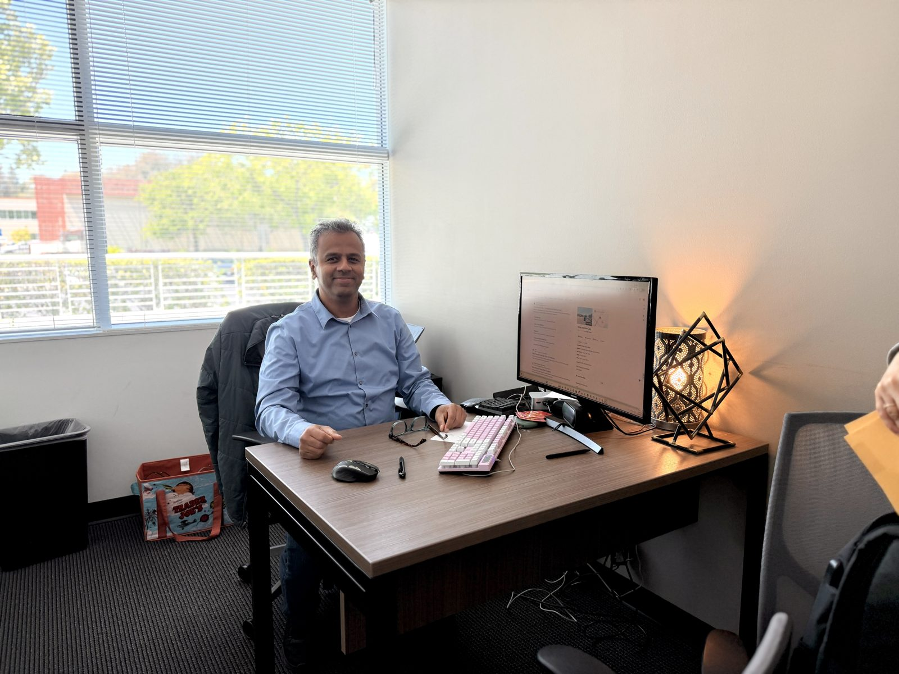

Board-certified in Internal Medicine, Obesity Medicine, Critical Care Medicine, and Neurocritical Care. Over two decades of healthcare experience across India, England, and the United States, including service as a U.S. Army Medical Corps officer. Trained at some of the most respected institutions in American medicine.

Dr. Sharma's medical career has spanned three countries — India, England, and the United States — giving him a depth of clinical perspective that few physicians possess. He earned his medical degree from the University of Delhi's College of Medical Sciences in 2004 and completed his internal medicine residency at Johns Hopkins University School of Medicine, one of the most prestigious training programs in the world.
He went on to complete a fellowship in Critical Care Medicine at Cooper Medical Education in New Jersey, followed by a Neurocritical Care fellowship at Emory University Hospital in Atlanta, Georgia. Together, these two fellowships gave him the intensive diagnostic and management skills required to care for the sickest hospitalized patients — including those with complex neurological emergencies. This combination — internal medicine, critical care, and neurocritical care — is rare in outpatient practice and gives him an unusual depth when patients present with complex, multi-system, or atypical symptoms.
Dr. Sharma served for several years as a Major in the U.S. Army Medical Corps, working as a neurocritical care physician caring for service members with traumatic brain injuries and complex neurological conditions. He received an honorable discharge with a Commendation Medal and completed his final separation from the Individual Ready Reserve in 2023.
Dr. Sharma is also board-certified in Obesity Medicine and is affiliated with Good Samaritan Hospital, El Camino Health, and O'Connor Hospital / Regional Medical Center. He has been designated by U.S. Citizenship and Immigration Services as a Civil Surgeon authorized to perform I-693 immigration medical examinations.
Modern healthcare too often reduces patients to a list of conditions and a stack of paperwork. Dr. Sharma's practice is built on the conviction that every patient is an individual with unique needs, fears, and goals.
That means longer appointments than the industry average. It means listening before prescribing. It means explaining the reasoning behind each recommendation, so patients can be active partners in their own care.
It also means honesty about uncertainty. Modern medicine rarely offers perfect answers. A good physician is one who is honest about what is known, what is uncertain, and what trade-offs are involved in any decision.
Now accepting new patients across all three Bay Area locations. Same-day appointments are usually available.